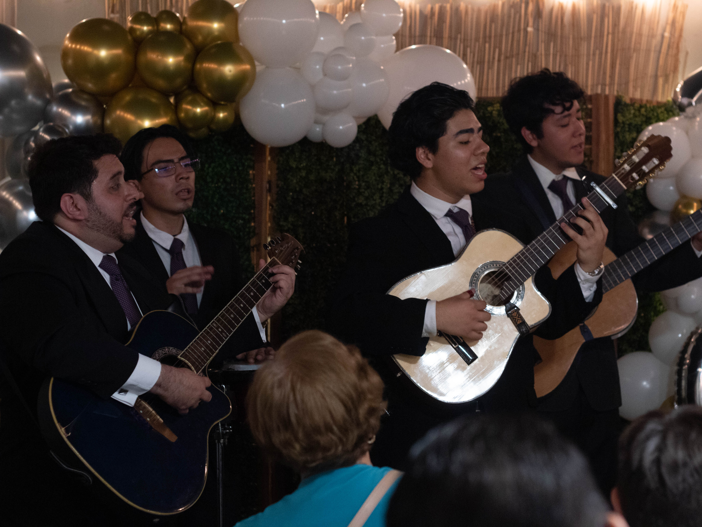

El bolero no es solo un genero musical: es una forma de narrar emociones con elegancia. Desde su origen caribeno hasta su fuerza en los trios latinoamericanos, su historia sigue viva en cada interpretacion.
Archivo Musical
El bolero: origen, evolucion y la emocion que nunca se apaga
Un recorrido por su nacimiento, su transformacion artistica y su permanencia en la memoria colectiva.
01
Breve origen del bolero
El bolero nace en el siglo XIX en Santiago de Cuba como una cancion poetica que unio melodia y sentimiento. Con el tiempo, su esencia romantica cruzo fronteras y encontro en Mexico una nueva fuerza interpretativa.

02
Evolucion
Durante el siglo XX, el bolero incorporo arreglos mas complejos, armonias vocales y formatos de trio que marcaron epoca. La radio, el cine y los grandes interpretes lo llevaron a escenarios internacionales sin perder su esencia emocional.

03
¿Por qué sigue emocionando hoy?
El bolero sigue vigente porque habla de emociones universales: amor, nostalgia, esperanza y despedida. Escucharlo hoy es abrir una ventana al pasado, pero tambien reconocer que esos sentimientos siguen vivos en el presente.